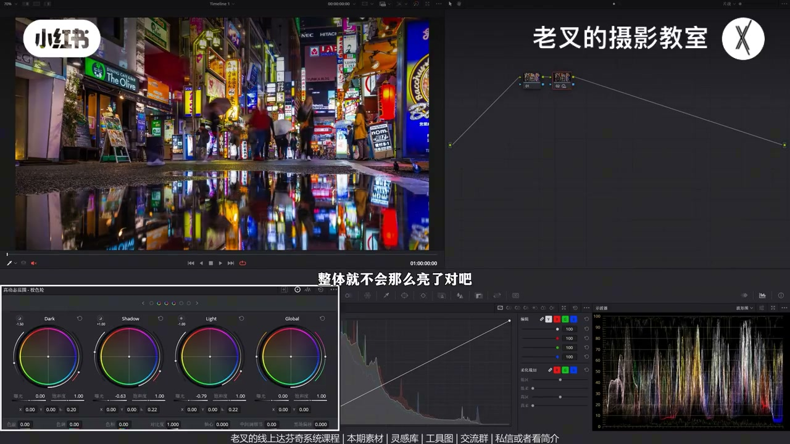
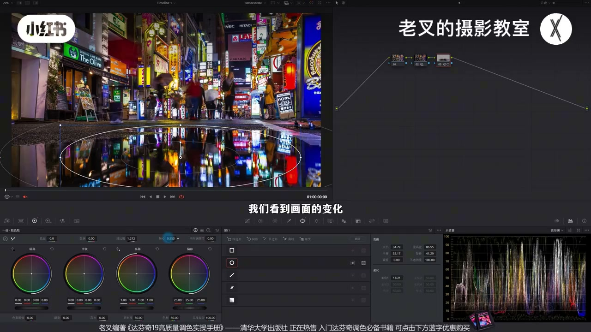
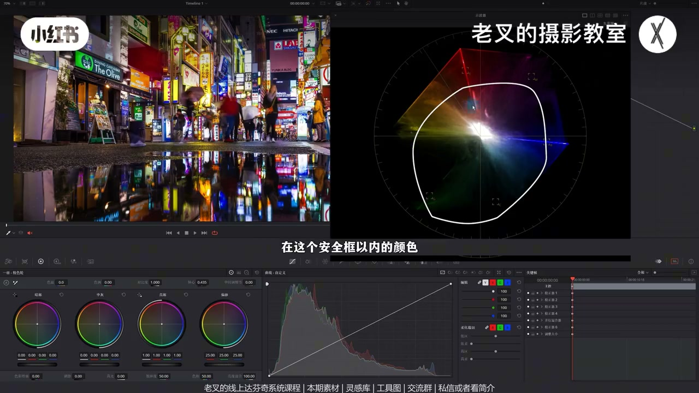
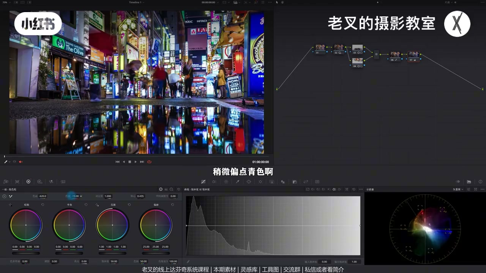
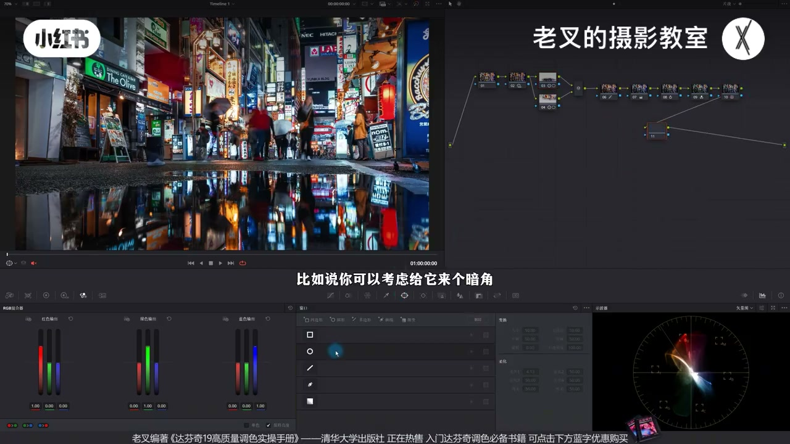

内容要点
肉眼灯火通明，上屏却又乱又杂、无质感。直出可跳过还原。先解决问题再美学：HDR 降 Shadow/Light 增灰面、抬 Highlight 保夜景光源；遮罩压抢戏水坛倒影、提上半主体，重塑曝光配比。向量示波器安全框看溢出，用饱和度对饱和度曲线只压高饱和。颜色归依走青蓝冷调，密度降过抢蓝；再 RGB 青橙+蜘蛛网净黄紫杂色；可选暗角与柔和对比度带灰质。
知识结构
HDR 降 Shadow/Light、抬 Highlight；波形峰尖不动、其余下拉。
下压水坛倒影（对比+轴向右）；上提主体（对比+轴向左）；氛围区别抢戏。
向量框外≈溢出；饱和度vs饱和度曲线降右端，只动高饱和。
降色温色调靠青蓝；密度拉满蓝青再降饱和，去抢戏蓝。
RGB 青橙；蜘蛛网黄→橙、紫→蓝；暗角+柔和对比度可选。
夜景街拍质感：先拉开灰面与分区（上主体、下氛围），再只治理溢出的高饱和，再把杂色往青蓝/青橙方向归依并用密度收蓝。光源点不要压死，否则夜景一样发灰。
00:00-00:59直出夜景：先增灰面，保住光源高光
街拍夜景常：肉眼通明，电脑上颜色乱杂无质感。本例直出，省还原（灰片自行还原）。调色先解决问题再美学：曝光层次过于一致，需要有亮有暗还有灰。
节点降 Shadow 与 Light 增灰面，整体不那么亮；再略抬 Highlight 保光源——夜景灯太暗太灰也没质感。波形最上尖点几乎不动，其余下拉，正是目标。

00:59-02:15分区：压倒影抢戏，提上半主体
下方水坛倒影略抢戏：画罩加对比，轴向右略压暗——压的是倒影里偏暗内容，高光点要留，夜景光源太暗易发灰。并行给上半画罩，对比+轴向左提亮。
开关 3/4 号节点：曝光配比变化，视线自然向上；下半只做氛围，不该与上半主要内容抢戏，层次就出来。

02:15-03:12向量安全框 + 饱和度曲线压溢出
看向量示波器：大量颜色溢出。方框围成的圈可当饱和安全框（不完全科学，但出框大概率溢出）。框内不必动，要降的是高饱和部分。
曲线旁「饱和度对饱和度」：右端下降，外围往里收、中间变化小——只压艳色。颜色问题先解决一层。

03:12-04:25颜色归依青蓝，密度收过重蓝
杂乱要归依：各色往同一方向靠，夜景首选蓝。降色温靠蓝，色调略偏绿让蓝带青；向量整体右下平移，颜色种类变少。蓝易过重：六相切片蓝青密度拉满再降饱和，蓝不再抢戏。7+8 开关可见颜色明显变少。素材可自取。

04:25-06:13青橙风格化、蜘蛛网净色、暗角收束
有黄有绿有蓝，易想到青橙：RGB 混合器抬红输出中的红、降蓝。仍有紫、黄杂色——蜘蛛网黄往橙、紫往蓝，颜色更干净一致。
可选暗角：大柔化圆罩反转压四周，强氛围缩视线。柔和对比度样条线压高光、提波谷、暗部对称操作，带一点灰质。力度自控；从乱杂调到有质感。

完整转录（249段）
以下文本由 Whisper medium 模型自动转录，可能存在少量识别误差，已尽可能修正。
大家在拍夜景街道的时候会不会遇到这种情况
肉眼看上去灯火通明
单是放在电脑上一看颜色又乱又杂
整体的画面没有质感
想要调出这种效果其实非常简单
这是一个直出画面
所以我们就省去了还原的行为
如果你是灰偏的话自行还原一下就好
然后我们就要开始进行调色
对于调色我们一定要先解决问题
再考虑美学的情况
这个画面中曝光的层次过于一致了
我们对于一个画面是需要有亮有暗
还得有灰
所以我们可以先来一个节点
通过降低Shadow色轮的曝光
以及Light色轮的曝光
来给画面增加更多的灰面
整体就不会那么亮了
但是我们还得稍微提高一点Highlight色轮的曝光
来保证高光其实是保留的
因为这个画面中特别是夜景画面
这种光源我们不能让它太暗太灰
否则也没有质感
此时我们可以看到波形图
在波形图中最上方这个点
它其实是固定不变的
但其余部分都在往下拉伸
这就是我们想要的一个效果
然后就是曝光的分区
其实我觉得目前下方
这个水坛上的曝光有一点点抢戏了
我们就可以来一个节点
给下方画一个遮罩
画好了遮罩之后
我们可以利用对比度配合轴心的方式
来给它稍微压暗一点
先增加一点对比度
然后轴心向右移动一点点
大概到这个程度
我们看到画面的变化
此时倒影中它就变暗了
但是为什么我们不直接降低全局的曝光
而是提高对比度呢
这是因为我们要压暗的是
水坛倒影中偏暗的内容
像这些高光的点
我们还是要保留的
不能让它太暗
还是那个原因
如果你的光源太暗的话
特别是夜景画面
你也是会非常容易发挥的
然后我们可以再按住
Alt加P或者是Option加P
建立一个变形节点
同样给上半部分画一个遮罩
来把上半部分稍微提亮一点
我们依旧是利用对比度配合轴心的方式
来给它做提亮
稍微增加点对比度
然后轴心向左移动一点
好 大概是这个情况
此时我们可以把3和4号节点开关
我们看一下
是不是画面中的曝光比重
也就是它的配比产生了变化
对吧
你自然而然的
就会往上半部分去看
因为上半部分更亮
而下半部分
它只是一个氛围塑造的一个区域
它不应该跟你上半部分的
主要内容去抢戏
所以我们需要这样做
层次也就出来了对吧
然后我们就可以解决
画面颜色的问题
首先我们先看一下使亮图
在使亮图中
它出现了一个什么情况
大量的颜色
其实是溢出的对吧
我们其实可以简单的
将使亮图这几个方框
围成的这个圈
是做颜色饱和度的安全框
虽然这不是非常科学的判断
因为有些颜色的溢出
在使亮图上看不出来
但是只要超出了这个框
那么这个颜色
大概率就是溢出的
而我们要解决的是
溢出部分的颜色
在这个安全框以内的颜色
我们是不用去调整它的对吧
因为它不是我们的问题
所以我们就明确了
我们要降低的是
高饱和部分的饱和度
我们可以再新建一个节点
来到曲线右手第二个工具
这里有个饱和度对饱和度曲线
我们把右侧这一端给它往下降
我们可以看一下使亮图的变化
在我们降低了右侧这一端了之后
外围它在往里收缩
而中间部分变化不大
这就是我们想要的一个效果
让高饱和部分的颜色给它降低了
我们看到画面中这些
高饱和部分颜色
是不是都在降低了对吧
就能够把画面中
特别艳的颜色给去掉
那颜色的问题解决了第一个
现在解决第二个问题
画面颜色杂乱的情况
也就是需要让画面颜色皈依
而皈依最常见的思路
就是让各个颜色往一个方向去靠
夜景画面呢
我们自然第一个想到的就是蓝色
所以我们可以再来一个节点
当然这些节点我单独建立
是为了给大家看到
每一个操作的变化
如果你放在一个节点
其实问题也不大
我们在新鲜这个节点中
用色温往蓝色方向去靠
也就是减少一点色温的数值
让整体带上更多的蓝色
同时色调也可以往绿色方向走
让这个蓝色稍微偏点青色
大概是这个结果
我们看到此时整体的画面
都在往青蓝色去靠了
对不对
其实我们从实量图上也看得出来
整体是有一点
向右下角去平移的感觉的
那么画面中的颜色自然就减少了
可是这样做会让蓝色太重
所以我们需要再建立一个节点
来解决7号节点产生的新问题
素材我也转到了现场分享平台
大家可以私信
或者看我剪辑来加入
素材是免费分享的
还要打分析线上系统课程
和线下调色训练营
在8号节点中
我们利用色轮6线切片工具
增加蓝色和青色的密度
来给它拉满
然后再降低它们俩的饱和度
蓝色也给它降一点
此时我们看到
蓝色就没那么抢新了
对不对
我们这时候其实可以把7和8号节点
一起开关
看一下画面的变化
颜色就明显变少了
对不对
然后我们就可以考虑风格化
画面中有黄色
有绿色
有蓝色
自然而然就会想到清晨资料
对不对
所以我们可以再来一个节点
利用RGB混合器
来快速的实现这个效果
在9号节点中
我们可以增加RGB混合器中
从红色输出的红色通道的竖直
然后降低蓝色通道的竖直
此时你看
画面中是不快速的带来了
一点清晨资料的感觉
但是还存在不少的杂色对吧
比如说远处这里的紫色
其实这些黄色
也不是特别好看
虽然我们把它
稍微往橙色方向走
但还是保留太多的黄色了
所以我们可以再来一个节点
利用蜘蛛网
来把它的颜色单独调整一下
也就是让黄色往橙色方向一走
我们看到这些黄绿色
都往橙色方向走了
也可以把这个紫色
让它往蓝色方向一靠
减少画面中这些紫色的影响
大概是这个结果
我们看到颜色是不是变干净了
而且变得一致了对吧
最后我们就可以给画面
全举加一点点效果
比如说你可以考虑
给它来个暗角
当然这暗角这种事情
都是非常的见仁见智的
你如果不喜欢
那就算了
暗角建立也非常简单
我们可以建立一个圆形遮罩
揉画开大一点
然后把它反转了
让它选出四周的位置
再把这四周位置的曝光
给它稍微往下一降
这样可以更加的
强化我们的氛围
同时也可以收缩一下视线
再或者也可以来个柔和对比度
也就是在曲线工具中
右上角三个点的选项
打开可编辑的样条线
我们用波形图来看曝光
高光这一端
给它往下降
再把高光延伸出来的波感
给它往上提
再把暗部这一端
给它往上提
把暗部这里延伸出来的波感
给它往下降
大概是这个情况
当然这个力度
你自己可以把握
重点是我们希望给画面
带来一点灰的感觉
那这样我们就把画面
从这样调成了这样
大家都可以自己把控
素材大家别忘了领取
就到这里
如果觉得你有帮助的话
还希望多多赞联
好了
这期就到这里
886